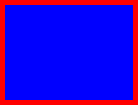
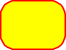
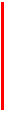
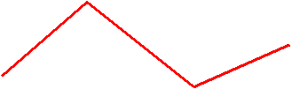
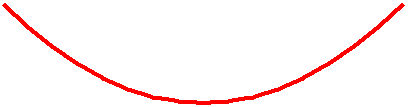
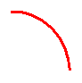
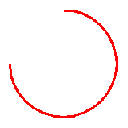

Back to top
Back to toptitle: Using Predefined Shapes description: This article describes using predefined shapes in VML, a feature that is deprecated as of Windows Internet Explorer 9. ms.assetid: 9a2e8b5a-b1d0-4a73-b058-24dac1f0b655 keywords:
This topic describes VML, a feature that is deprecated as of Windows Internet Explorer 9. Webpages and applications that rely on VML should be migrated to SVG or other widely supported standards.
[!Note]
As of December 2011, this topic has been archived. As a result, it is no longer actively maintained. For more information, see Archived Content. For information, recommendations, and guidance regarding the current version of Windows Internet Explorer, see Internet Explorer Developer Center.
Â
As you've learned, you can use the <oval> element of VML to create a simple oval. VML provides several other predefined elements. In this topic, we will illustrate how to draw graphics by using these elements.
In this topic:
You can use the <rect> element to draw a rectangle. You can then customize the rectangle by specifying different property attributes.
For example, you can draw a rectangle that is filled with blue by specifying fillcolor="blue", and give it a 3.5-point red outline by specifying strokecolor="red" strokeweight="3.5pt", as shown in the following VML representation:

<v:rect style='width:100pt;height:75pt' fillcolor="blue"
strokecolor="red" strokeweight="3.5pt"/>
For more information about this element, see the VML specification . (Note: The VML specification doesn't have a bookmark for the <rect> element.)
You can use the <roundrect> element to draw a rectangle with rounded corners. You can then customize the rounded rectangle by specifying different property attributes.
For example, you can draw a rectangle that has rounded corners 30% of half the smaller dimension of the rectangle by specifying arcsize="0.3", fill it with yellow by specifying fillcolor="yellow", and give it a 2-point red outline by specifying strokecolor="red" strokeweight="2pt", as shown in the following VML representation:

<v:roundrect style='width:100pt;height:75pt"
arcsize="0.3" fillcolor="yellow"
strokecolor="red" strokeweight="2pt"/>
For more information about this element, see the VML specification .
You can use the <line> element to create a straight line. You can then customize the line by specifying different property attributes.
For example, you can draw a horizontal line by specifying from="20pt,20pt" to="100pt,20pt", and make it 2-point and red by specifying strokecolor="red" strokeweight="2pt", as shown in the following VML representation:
<v:line from="20pt,20pt" to="100pt,20pt" '
strokecolor="red" strokeweight="2pt">
You can draw a vertical or diagonal line by simply specifying different values for the from and to property attributes, as shown in the following VML representation:

<v:line from="20pt,20pt" to="20pt,100pt"
strokecolor="red" strokeweight="2pt">
For more information about this element, see the VML specification .
You can use the <polyline> element to define shapes that are created from connected line segments. You can then customize the shape by specifying different property attributes.
For example, to draw the shape shown in the following picture, you can type the following VML representation:

<v:polyline points="18pt,54pt,90pt,-9pt,180pt,63pt,261pt,27pt"
strokecolor="red" strokeweight="2pt"/>
For more information about this element, see the VML specification .
You can use the <curve> element to draw a cubic bézier curve. You can then customize the curve by specifying different property attributes.
For example, to draw a curve as shown in the following picture, you can type the following VML representation:

<v:curve style='position:relative'
from="0,0" control1="100pt,100pt" control2="200pt,100pt"
to="300pt,0" strokecolor="red" strokeweight="3pt"/>
For more information about this element, see the VML specification .
You can use the <arc> element to draw an arc that is defined as a segment of an oval. The arc is defined by the intersection of the oval with the start and end radius vectors given by the angles. The angles are calculated by using the properties of a circle (width equal to height), then scaled anisotropically to the desired width and height.
For example, you can draw an arc that starts at 0 degrees and ends at 90 degrees by specifying startangle="0" endangle="90", as shown in the following VML representation:

<v:arc style='width:100pt;height:100pt'
startangle="0" endangle="90"
strokecolor="red" strokeweight="2pt"/>
You can change the arc by specifying different startangle and endangle values, as shown in the following VML representation:
<v:arc style='width:100pt;height:100pt'
startangle="0" endangle="180"
strokecolor="red" strokeweight="2pt"/>

<v:arc style='width:100pt;height:100pt'
startangle="0" endangle="270"
strokecolor="red" strokeweight="2pt"/>
For more information about this element, see the VML specification .
You can use VML predefined elements such as <oval>, <line>, <polyline>, <curve>, <rect>, <roundrect>, and <arc> to easily draw graphics on a Web page, and then customize those graphics by simply changing their property attributes.
Â
Â